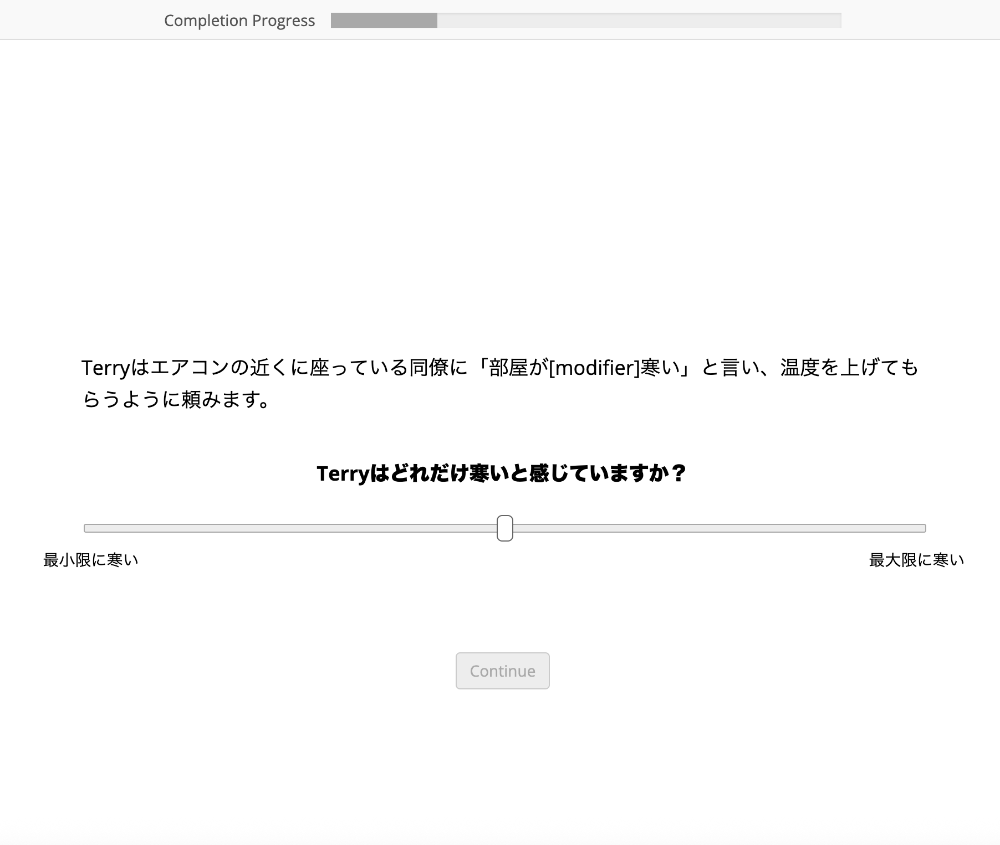

<!DOCTYPE html>
<html>

<head>
    <title>Experiment</title>
    <meta http-equiv="pragma" content="no-cache">
    <link rel="icon" href="data:;base64,iVBORw0KGgo=">
    <link href="https://unpkg.com/jspsych@7.3.1/css/jspsych.css" rel="stylesheet" type="text/css" />
    <script src="https://unpkg.com/jspsych@7.3.1"></script>
    <script src="https://unpkg.com/@jspsych/plugin-html-button-response@1.1.2"></script>
    <script src="https://unpkg.com/@jspsych/plugin-html-slider-response@1.1.2"></script>
    <script src="https://unpkg.com/@jspsych/plugin-survey-text@1.1.3"></script>
    <script src="https://unpkg.com/@jspsych/plugin-external-html@1.1.3"></script>
    <script src="https://unpkg.com/@jspsych/plugin-survey-html-form@1.0.3"></script>
    <script src="https://unpkg.com/@jspsych/plugin-survey-multi-choice@2.0.0"></script>
    <script src='https://ajax.googleapis.com/ajax/libs/jquery/2.2.4/jquery.min.js'></script>
    <script src="util.js"></script>
    <script src="stimuli_jp/scenarios.js"></script>
    <link href="styles.css" rel="stylesheet" type="text/css" />
</head>

<body></body>

<script>
    // Initialize the jsPsych object (possibly with arguments: https://www.jspsych.org/7.3/reference/jspsych/)
    var jsPsych = initJsPsych({
        show_progress_bar: true,
        on_trial_finish: function() {
            write_data_to_server()
        }

    })
    
    // Define `url_write_data_php` and `output_filename` for the `write_data_to_server` function
    var url_experiment_dir = "http://18.18.93.98:8004/"
    var url_write_data_php = url_experiment_dir + 'write_data.php';
    var subject_id = jsPsych.data.getURLVariable('PROLIFIC_PID'); // <-- use URL variables?
    if (!subject_id) {
        subject_id = jsPsych.randomization.randomID(10);
        /* console.log(`subject_id randomly assigned: ${subject_id}`); */
    }
    var output_filename = `data/subject_${subject_id}.json`;
    // /* console.log(`Data will be saved to: ${url_experiment_dir + output_filename}`); */

    // Initialize a timeline (just an empty array)
    var timeline = [];

    for (var i = 0; i < data.length; i++) {
        var trial = {
            type: jsPsychHtmlSliderResponse,
            stimulus: '<p class="stimulus">' + data[i]['scenarios'] + '</p><p class="scale">' + '<b>' + capitalizeFirstLetter(data[i]['question to ask']) + '</b></p>',
            require_movement: true,
            labels: [data[i]['left of slider'], data[i]['right of slider']],
        };
        timeline.push(trial);
    }
    timeline = jsPsych.randomization.shuffle(timeline)
    var consent = {
        type: jsPsychExternalHtml,
        url: "stimuli_jp/consent.html",
        cont_btn: "agree",
    }
    var country = {
        type: jsPsychSurveyMultiChoice,
        questions: [{
            prompt: 'Which country are you from?',
            required: true,
            options: ['United States', 'United Kingdom', 'Other']
        }]
    }

    var instructions = {
        type: jsPsychHtmlButtonResponse,
        stimulus: "<p class='stimulus'>In this study, you will read text scenarios and make slider judgments about the situations which they describe. Here is an image of an example trial.</p> </br><p class='stimulus'> In the upcoming trials, please read the descriptions and give your answer by clicking on the slider. Please read each scenario description carefully, but we are interested in your intuitive judgment so no need to second-guess yourself. </br></br>You must make a slider judgment in each trial. You will not receive any feedback.</p></br><b>When you are ready to begin, press the start button.</b>",
        choices: ["Start"],
        margin_vertical: '20px'
    }

    var final_timeline = [consent].concat([instructions], timeline, [country]);

    var debrief = {
        type: jsPsychSurveyHtmlForm,
        html: '<p>Thank you very much for your participation!<br><br>Please let us know if you have any other comments.</p></br><textarea name="comments" rows="5" cols="50"></textarea><br><br><br>Please enter your Prolific ID. <input size = 15 name="prolific"></input></br>',

        button_label: 'Return to Prolific',
        on_finish: function() {

            write_data_to_server()
            window.open('https://app.prolific.com/submissions/complete?cc=CW5DH5TQ&PROLIFIC_PID=' + subject_id)
        }
    }

    final_timeline.push(debrief)

    // // Run the timeline
    jsPsych.run(final_timeline);
    write_data_to_server()
</script>

</html>
